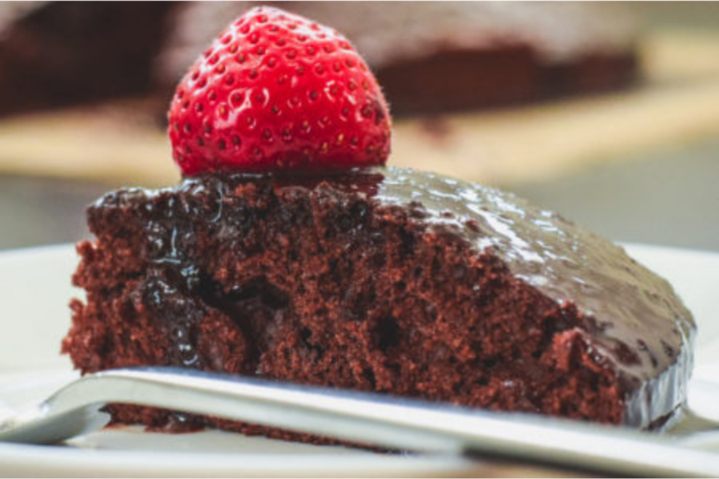

Vegan Chocolate Cake

Description
This vegan cake is a really simple, yet very tasty cake.
Ingedients
- 1.5 cups all-purpose flour
- 1 cup white sugar
- 0.25 cup cocoa powder
- 1 teaspoon baking soda
- 0.5 teaspoon salt
- 1 cup water
- 0.33 cup vegetable oil
- 1 teaspoon vanilla extract
- 1 teaspoon distilled white vinegar
Steps
- Gather all ingredients.
- Preheat the oven to 350 degrees F (175 degrees C). Lightly grease a 9x5-inch loaf pan.
- Sift flour, sugar, cocoa, baking soda, and salt together in a large bowl.
- Add water, oil, vanilla, and vinegar; mix together until smooth.
- Pour mixture into the prepared pan.
- Bake in the preheated oven until a toothpick inserted into the center comes out clean, about 45 minutes.